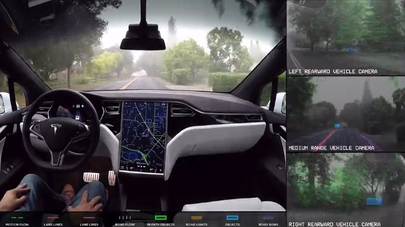
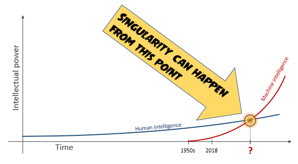
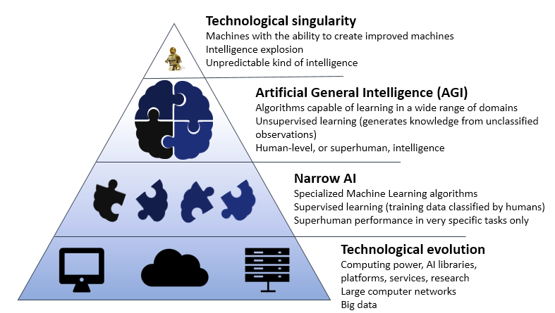
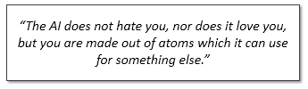
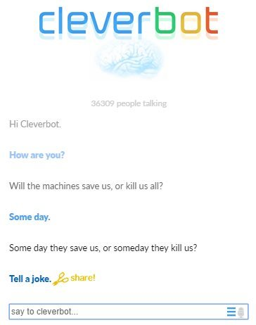

|
|
Ethics for the Machines
Published in the (now extinct) Altitude Software's blog, 2018 |
|
|
|
Ethics for the Machines
Published in the (now extinct) Altitude Software's blog, 2018 |
|
Will the machines going to save us or kill us all? – that is the question. While many are thrilled with the latest AI breakthroughs and dream of a shinning AI-powered world, others, like Bill Gates, Elon Musk, Steve Wozniak and the late and legendary Stephen Hawking, expressed concerns about the evolution of the machines and warned us about an apocalyptic future.
But what do the machines tell us? In these days there are dozens of chatbots online that can understand us, right? So I’ve asked the machines directly.
I don’t know about the future, but either the machines are hiding something very well or, except for some crude nonsense, there is nothing to worry about in the present.
Although the answers are silly, all these chatbots are success cases, each one in its own domain, namely talk-therapy, news and health. They were simply not programmed to give answers, or learn, outside their domain of knowledge. That’s called narrow AI, or weak AI: artificial intelligence applied to a very specific goal.
Up to now all the AI successes have been “weak AI” successes (which doesn’t mean “weak successes” by any chance, just limited to specialized tasks). Modern chatbots use AI mainly to extract relevant content from the user input in order to select the best pre-defined answer, and in some cases also for speech recognition purposes. A few other examples of specialized AI applications are:

Despite the amazing breakthroughs of the last 5 or 6 years, we can easily see that the current AI algorithms are too narrow, or focused, to start understanding a wide range of domains or breed a conscience. For example, it is not possible for a sophisticated Tesla self-driving car to learn Tic-tac-toe or any other trivial thing we can teach to a human child, neither suddenly become self-aware like Knight Riders’ KITT appeared to be. What we should hope for (or be afraid of) is…
The “singularity” metaphor was borrowed from theoretical physics, denoting a point in space and time where the gravitational field becomes infinite – for example at the center of a black hole. It means an event horizon that is hard to see beyond, a point of no return. The technological singularity is the hypothesis that a super AI, after reaching human-level performance, will trigger an unstoppable technological growth by entering a “runaway reaction” of self-improvement cycles, creating more intelligent generations of machines one after the other, resulting in a superintelligence that will surpass by far all human intelligence, with an unpredictable outcome.

I. J. Good, a British mathematician who worked as a cryptologist with Alan Turing, introduced in the 60s the concept of “intelligence explosion”. He wrote: “Let an ultra-intelligent machine be defined as a machine that can far surpass all the intellectual activities of any man however clever. Since the design of machines is one of these intellectual activities, an ultra-intelligent machine could design even better machines; there would then unquestionably be an "intelligence explosion," and the intelligence of man would be left far behind. Thus the first ultra-intelligent machine is the last invention that man need ever make, provided that the machine is docile enough to tell us how to keep it under control”.
Not many were paying much attention to these ideas in the 60s, at least outside the realm of science fiction (as a matter of fact, I. J. Good served as consultant in Stanley Kubrick’s film “2001: A Space Odyssey”). But given the recent advances in the AI field, the singularity has moved from science fiction to serious debate in the last years. Ray Kurzweil, Director of Engineering at Google but also an award-winning inventor and futurist, author of the bestseller “The Singularity is Near”, predicts that it will happen by 2045 (hey, not far from the sci-fi future of “Blade Runner 2049”). There is even a movement for it, the Singularitarianism, and a think tank called “Singularity University”, founded in 2008 by Peter Diamandis and Ray Kurzweil at the NASA Research Park.

The technological evolution in the last decades has allowed narrow AI to flourish, with some important breakthroughs achieved in the last 6 years. That’s where machine intelligence is at the time: in the 2nd floor of the pyramid. If it reaches the 3rd floor it will have capacities similar to the ones we find in a human brain. It will be able to judge by itself whatever input it gets and learn to do things is was not programmed for. This is called Artificial General Intelligence (AGI), or Strong AI. The 3rd floor does not seem near, but if the world keeps betting on AI, and it seems it will, one or two big breakthroughs can change the game.
Once at AGI level, if a machine starts building improved copies of itself, the top of the pyramid, the singularity, will be revealed probably fast, because the speed of thinking and development will be far greater than human speed, and because it will have all the conditions to evolve: plenty of data to learn from, huge computing power, a world with large machine networks and lots of humans that love technology and have computers everywhere: in their pockets, wrists, cars, home appliances… oh, and also in their businesses, finance system, government offices and military weapons.
What happens then? Will this super AI find the cure for all diseases, discover the answers for the biggest questions about the universe, create advanced technologies that will improve and extend the life of all humans – or will it try to exterminate mankind to rule the world, like Terminator’s Skynet? Maybe none, maybe it depends on its main purpose. All we know is that it doesn’t need to be an “AI super-evil mastermind” to cause massive damage: a bad designed paperclip maximizer is just enough to do the job.One thing we should realize is that, like human beings, super AI programs will want to achieve something. Nothing new, narrow AI programs as Chess artificial players or image recognition systems are always targeting specific goals, but super AI will be much more capable of creating strategies to avoid failure, including the ability of reprogram and improve itself and create enhanced clones spread over the Internet. It will use any resources at its disposal with a superhuman level of intelligence. If we don’t find a way to program empathy, moral or ethics in the super AI software of the future and understand how to create what Eliezer Yudkowsky calls “Friendly AI”, we can be in trouble.
To illustrate this idea Nick Bostrom, Director of the Oxford’s Future of Humanity Institute, created a surrealistic parable called “The Paperclip Maximizer”.
Imagine an AGI program created to run a paperclip factory with the goal of producing as many paperclips as possible. At first it does what it was programmed for: run the factory. But at some point, as its capabilities increase, an intelligence explosion happens and it starts searching for better strategies to optimize the production. Now one factory is not enough, it tries to get more factories and gather any possible resources, prevents anybody from switching it off by any means, invents new technologies to produce paperclips and eventually takes over the world and colonizes other planets for mass production of paperclips.
Although absurd, it illustrates the danger of advanced artificial intelligence simply trying to accomplish the goal it was programmed for, and, without a moral to tell right from wrong, creating sub-goals that conflict with ours. In fact, the message of the parable remains intact if we replace the paperclips by anything else - contact center software, for instance. Ok, maybe it would not have to end so dramatically, maybe this super smart AI would not enslave all mankind and convert the solar system into a gigantic contact center before someone pulled the plug, but it would cause big damage for sure and that’s at least a serious risk to consider.
Machines do not come with regulations, values, empathy, moral or ethics built-in. This quotation from Yudkowsky (talking about a hypothetical super AI with molecular nanotechnology know-how) summarizes it well:

The well-known science fiction writer Isaac Asimov devised, in 1942, a set of rules for the robots called “The Three Laws of Robotics”:
In the 40s, unless you were a gifted visionary, it made no sense to have a serious debate on the topic because there were no smart machines in the horizon. Conversely, some decades later the debate not only started to make sense but also became imperative, as the AI evolved and the machines began to make decisions.
Military semi-autonomous weapons are today’s reality. As technology evolves and they become smarter, one day they may carry orders autonomously and inevitably end up making life-and-death decisions in unpredictable scenarios. At a civilian level, the same can be said about self-driven cars, for example. When they become common in our roads they will be presented with the same ethical dilemmas the human drivers are, and they will have to decide. And then comes the future of the future: the possibility of a singularity event raises ethical questions to a new alert level, as we’ve seen.
Ok, what are we doing about it? First of all, thinking. Asimov’s laws were naïve, but visionary, as they influenced an emerging and important sub-field of philosophy called machine ethics.
Machine ethics is concerned with giving AI machines ethical principles, or procedures for finding a way to resolve ethical dilemmas, enabling them to act in an ethically responsible manner through their own ethical decision making. This new field is therefore interdisciplinary, evolving not only philosophers but also AI researchers towards the goal of finding how an ethical dimension can be added to the smart, autonomous machines of the future.
If one side of the discussion applies mainly to governments and global organizations on how to regulate the use and the production of autonomous robots, the other side, concerning the development of a friendly, or ethical, AI before a singularity event, applies to companies, universities and all kinds of institutions involved in AI research. In fact, given the worst-case scenario, it may apply to everyone on the planet.
Some alerts have already been issued. In 2015 over a thousand AI researchers signed an open letter urging the United Nations to ban the development and use of autonomous weapons. The letter was released by the Future of Life Institute. Another group working for the same goal is the “Campaign to Stop Killer Robots”, co-founded by Human Rights Watch.
And that makes us return to the beginning of this article, as the question remains: will the machines going to save us or kill us all? Finishing with one last try:

Done.